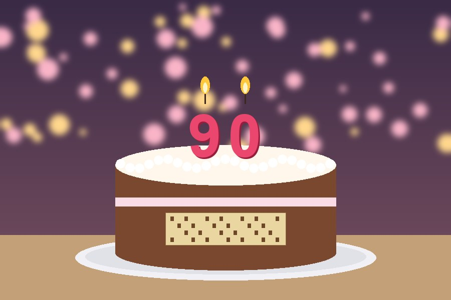

Évfordulók › 90. születésnap
90. születésnap
2024. március 9-én családja és egykori kollégái körében ünnepelte 90. születésnapját. A tortát volt tanítványai készíttették, a díszítés egy lyukkártyát formázott.

Évfordulók › 90. születésnap
2024. március 9-én családja és egykori kollégái körében ünnepelte 90. születésnapját. A tortát volt tanítványai készíttették, a díszítés egy lyukkártyát formázott.
